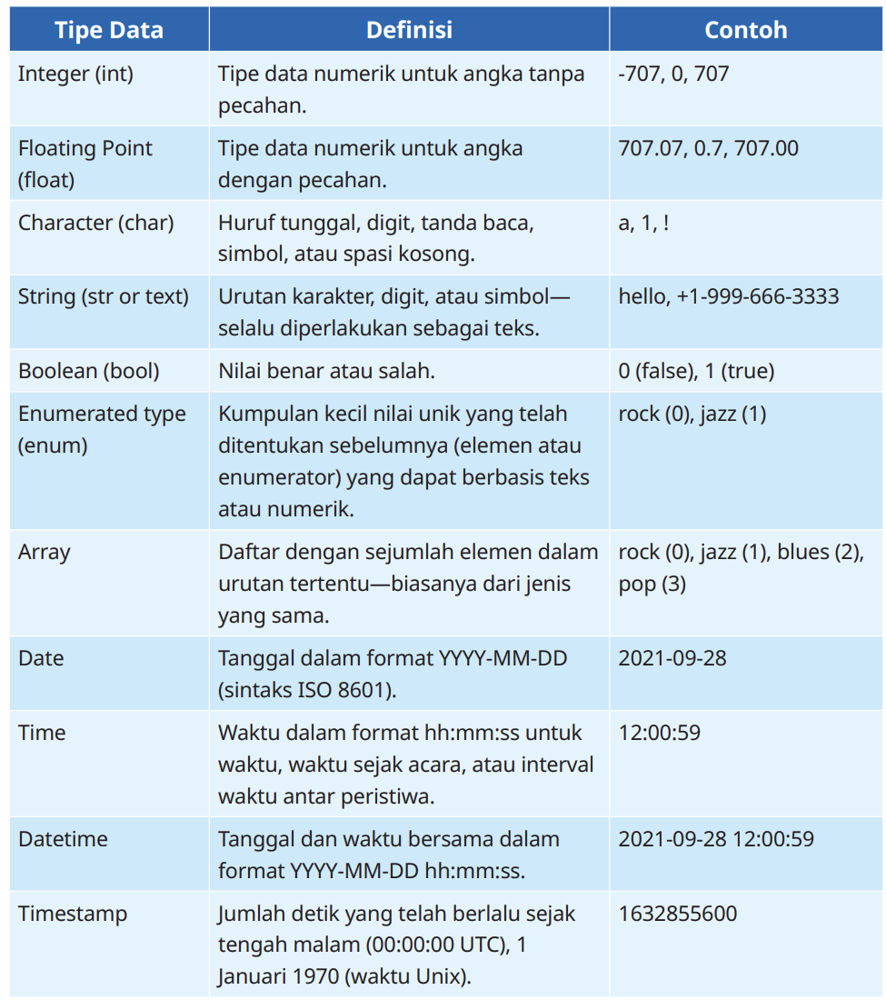

Pengenalan Pemrograman
Program komputer (biasa disebut program) adalah seperangkat instruksi yang ditulis untuk melakukan fungsi tertentu pada komputer. Program yang sama dalam bentuk kode yang dapat dibaca manusia disebut kode sumber, yaitu suatu bentuk program yang memungkinkan pemrogram untuk menganalisis dan memverifikasi algoritma yang digunakan dalam program.
Pemrograman komputer adalah proses berulang menulis dan mengedit kode sumber untuk membuat program. Beberapa program komputer dapat berjalan secara bersamaan di komputer. Kemampuan komputer untuk menjalankan beberapa program secara bersamaan disebut multitasking.
Bahasa Pemrograman
Bahasa pemrograman adalah rangkaian kata berupa instruksi atau perintah yang dapat dimengerti oleh komputer, biasanya terdiri atas banyak baris. Bahasa pemrograman juga digunakan untuk membuat aplikasi tertentu, tergantung dari kebutuhan aplikasi yang sedang dibuat.
Tipe Data
Tipe data adalah atribut yang menentukan tipe data dari suatu variabel yang memberi tahu sistem komputer bagaimana menafsirkan nilai tersebut.
Variabel
Variabel adalah tempat untuk menyimpan nilai.Dalam bahasa pemrograman, variabel berfungsi untuk menyimpan data ke dalam memori komputer. Nilainya dapat berubah-ubah.
Cara Penulisan Variabel
- Tipe Data Integer
- Tipe Data Character
- Tipe Data String
Tipe data integer seperti 1, 5, 9. Tipe data integer dijelaskan menggunakan kata kunci int.
Tipe data character, yaitu tipe data karakter seperti 'A', 'a', 'Z'. Tipe data character dideskripsikan menggunakan kata kunci char.
Tipe data untuk menyimpan set karakter. "hallo", "world", "hallo world", dan lain sebagainya. Tipe data string dijelaskan menggunakan kata kunci String